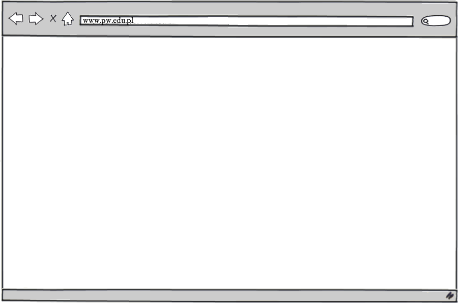
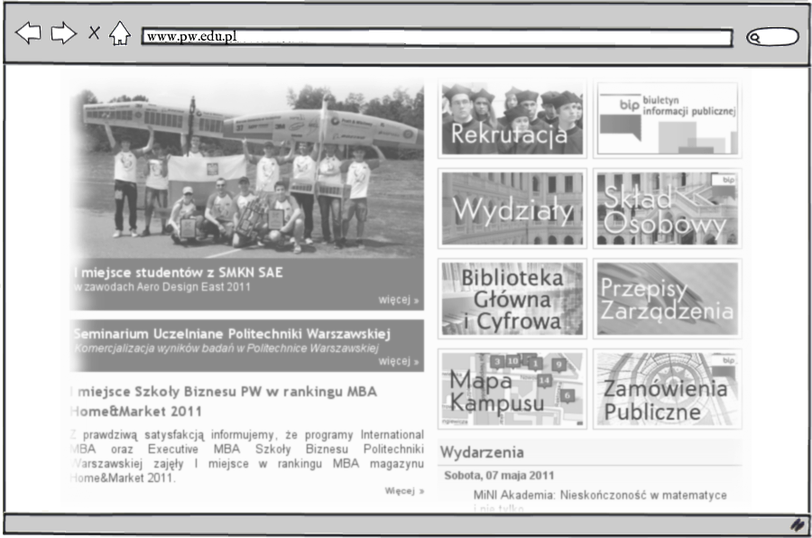

Building Online Presence
From a Twitter Blog
and a Facebook Page
to a Full-Featured Website
Building Online Presence
From a Twitter Blog
and a Facebook Page
to a Full-Featured Website
by Piotr Szotkowski
Building Online Presence
www.pw.edu.pl
Building Online Presence
civicrm.org
talk agenda
- why online presence?
- Internet: how does it work?
- classic approach: a website
- quick approach: a microblog
- hey, social networks!
why online presence?
- company website
- offer of services
- personal website / blog
- promotion
- contact
Internet: how does it work?
- well, I sit at my computer…
- …or a laptop…
- …or a tablet…
- …or a phone…
- …and, um, browse websites!
Internet: how does it work?

Internet: how does it work?

Internet: how does it work?

Internet: not only WWW
- there are other Internet services:
- chat
- voice & video
- (and other still)
client-server model

client-server model
- browser, email, chat: client
- ‘somewhere over there’: server
- various protocols: HTTP, IMAP, XMPP
- request / response cycle
- ‘live’ interaction somewhat simulated
WWW: HTML over HTTP
- World Wide Web
- =
- HyperText Transfer Protocol
- +
- HyperText Markup Language
WWW: how does it work?
- user comes up with a URL
- puts
www.pw.edu.pl/mapain a browser - browser to DNS: ‘where is
www.pw.edu.pl?’ - DNS to browser: ‘there: 194.29.151.5’
- browser to 194.29.151.5: ‘HTML for
/mapa?’
WWW: how does it work?
WWW: how does it work?
- user goes to a search engine
- types it the query
- clicks on the results
- clicks further
- WWW: hyperlinked HTML pages
your own website
- your own domain name
- your own server + broadband connection
- (or hired hosting)
- actual content to display
- a way to manage this content
your own website
- static / dynamic content
- (embedded?) multimedia
- contact?
- comments?
- user-generated content?
traffic sources
- via URLs
- via ad campaigns
- via links on affiliate pages
- via social networks
- via search engines
staff needed
- webdeveloper
- graphic designer
- UI / accessibility experts?
- SEO expert?
- crowdsourcing / folksonomy?
tools & technical details
- which Content Management System?
- Flash or HTML5?
- which server stack?
- different media types / devices?
- particular user groups?
Internet, again

hired hosting
- usually takes care of the domain
- offers a CMS
- …or an easy way to setup one
- upload WordPress or Drupal
- choose a theme and you’re set
Software as a Service
- CMS is a web application
- example: WordPress.com
*.wordpress.comdomain: free- own domain & additional features: paid
- Groupon started as a WordPress blog
microblogging
- short messages: 140 characters
- trivial to setup
- notification, reminders
- social network potential
- worth having anyway
microblogging
- Twitter, Blip
- website widgets
- accessible via API
- communication over SMS
- dedicated mobile clients
social networks
- trivial to setup
- presence where people are
- MySpace, NK, Facebook, Twitter, Blip
- direct social interaction
- control in the hands of the social network
summary: advantages
- full-fledged: own website
- (hosted or with own hosting if appropriate)
- worth considering: SaaS solution
- quickest to setup: microblogging
- added value: social networks
summary: disadvantages
- own website: high costs, staff, downtime
- hosted: moderate costs, less flexible
- SaaS solution: limited features, dependency?
- microblogging: minimal features, dependency
- social networks: strong dependency!